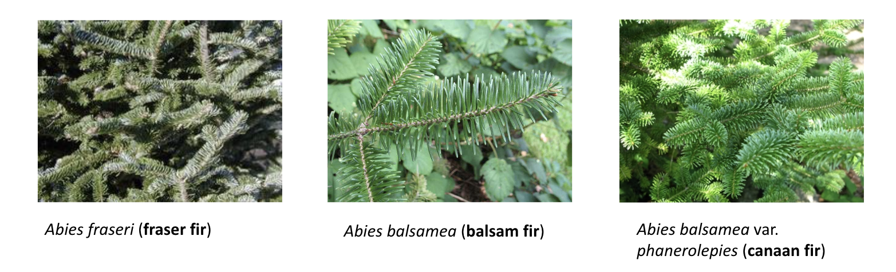

EASEL (Efficient, Accurate, Scalable Eukaryotic modeLs), a Tool for Improvement of Eukaryotic Genome Annotation
• Development of tool that integrates both RNA folding and functional annotation into a model to enhance gene prediction accuracy
• Benchmarking of existing annotation across diverse plant genomes (multiexonic vs. monoexonic genes and BUSCO completeness)
• Optimizing AUGUSTUS and training (with RNA/EST hints) to improve gene prediction for non-model organisms
• Scaling the framework for organisms with larger genome sizes
Expression Analysis of Needle Abscission in Easetern North American Firs
• Assemble RNA-Seq transcript data of three gymnosperm species (Abies balsamea, Abies fraseri and Abies balsamea phanerolepis) using Oyster River Protocol
• Identify genes expressed at the extremes of needle abscission retention (good vs bad)
Complete Genome Assembly of Inga vera

• Using Illumina and PACBIO reads of Inga vera foliar tissue, identify best genome assembler (Flye, SOAP, SPAdes, Shasta, FALCON, Canu, MaSuRCA)
• Estimate genome size in GenomeScope
Comparative Transcriptomic Analysis of Juvenile and Adult Leaf Morphologies in Conifers

• Evaluate differences in anatomy and gene expression patterns of juvenile and adult conifer leaves from two independent lineages (Juniperus flaccida and Pinus cembroides) known to exhibit heteroblastic development
• Perform de novo RNA-Seq analysis on twelve libraries sequenced on Illumina with HiSeq 2500 (100bp PE)
• Identify differentially expressed genes in each species using DESeq2 and categorize them by biological functional via network analysis with GeneMANIA
• Functionally classify Gene Ontology (GO) terms and run OrthoFinder to identify gene families